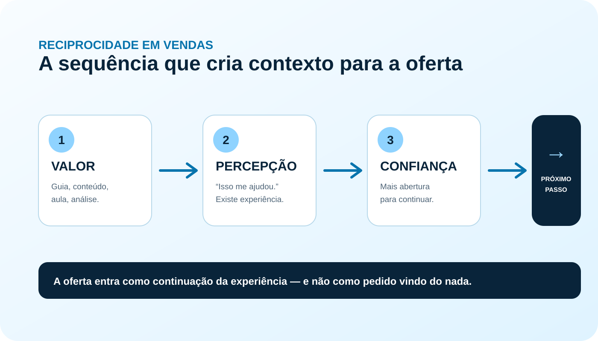

Antes de pedir atenção, cadastro ou compra, existe uma pergunta que muda o jogo: o que a pessoa recebeu de você até aqui?
É aí que entra o gatilho da reciprocidade. Quando alguém percebe que recebeu algo útil, tende a ficar mais aberto à relação. No marketing, essa entrega pode ser um guia, uma aula, um diagnóstico, um checklist, uma análise, um e-mail ou um conteúdo que resolve uma parte do problema.
Pensa numa ponte. De um lado está você com uma oferta. Do outro, uma pessoa que ainda está tentando decidir se vale a pena prestar atenção. A reciprocidade ajuda a construir essa passagem.
O que é o gatilho da reciprocidade?
Reciprocidade é uma norma social estudada há décadas: relações humanas costumam envolver algum tipo de resposta ao que recebemos. No marketing, o termo “gatilho da reciprocidade” virou uma forma prática de falar sobre esse princípio.
O ponto mais importante é o seguinte: reciprocidade não é dívida. Entregar algo para criar culpa ou obrigação enfraquece a relação. A aplicação com integridade parte de outra lógica: primeiro você ajuda; depois mostra como a pessoa pode avançar.
Por isso, a reciprocidade funciona especialmente bem em mercados nos quais confiança pesa na decisão: cursos, mentorias, consultorias, serviços, produtos de conhecimento e vendas que exigem análise antes da compra.
Por que entregar valor antes da oferta muda a venda?
Uma pessoa que acabou de conhecer sua marca ainda está lidando com incerteza. Ela não conhece sua forma de pensar, não sabe se sua promessa se sustenta e ainda não tem experiência suficiente para avaliar seu trabalho.
Uma entrega útil reduz parte dessa incerteza. Quando alguém aplica uma orientação e percebe algum avanço, sua comunicação ganha uma prova prática: a pessoa experimentou uma parte do valor antes da compra.

Essa lógica aparece com frequência em estratégias de conteúdo e captação. Um artigo ensina. Um checklist ajuda a executar. Uma aula organiza o raciocínio. Um guia aprofunda o tema. Depois, a oferta entra como continuação.
Aplicação: se o conteúdo gratuito resolve uma parte do problema que sua oferta paga resolve por inteiro, a transição tende a fazer mais sentido para o público.
5 formas de usar reciprocidade nas vendas
Entregue uma solução organizada para um problema específico. O material precisa gerar avanço antes de apresentar a oferta.
Ensine algo que a pessoa possa testar. Um conteúdo que muda uma decisão vale mais do que uma sequência de frases genéricas.
Mostre onde está o problema, o impacto e uma direção. O diagnóstico entrega clareza antes da proposta comercial.
Faça o público experimentar seu método de raciocínio. A aula funciona como amostra da experiência que existe depois da compra.
Use a sequência para entregar ideias, exemplos e ajustes. A oferta chega depois que já existe uma relação de utilidade.
Reciprocidade e isca digital: onde as duas se encontram
Uma isca digital pode captar contato e, ao mesmo tempo, ativar reciprocidade. Isso acontece quando a pessoa percebe que o material vale o tempo investido para consumi-lo.
A diferença aparece no conteúdo. Um PDF feito apenas para recolher e-mail cumpre a função de captura. Um material que organiza uma decisão, entrega um método ou resolve uma etapa do problema começa a construir percepção de valor.
O Guia Prático da MPMV foi pensado nessa lógica: ele entrega uma estrutura de persuasão antes de qualquer compra. Quem lê já consegue revisar conteúdo, argumentos e ofertas com critérios mais claros.

Quer aplicar reciprocidade na prática?
Baixe gratuitamente o Guia Prático Persuasão pra Vender Todo Santo Dia. São 23 páginas com princípios, critérios e estruturas para transformar o que você vende em argumentos que o cliente entende e valoriza.
QUERO RECEBER O GUIA GRATUITO →O erro que transforma reciprocidade em truque
O erro aparece quando a entrega existe apenas para cobrar uma resposta depois.
É o material gratuito que promete muito e entrega quase nada. É a “análise” que na prática só prepara um pitch. É o presente usado para criar constrangimento. Nesse cenário, a pessoa percebe a intenção e a confiança cai.
Reciprocidade depende de valor percebido. Se o público sente que recebeu algo que realmente ajudou, existe base para continuar. Se sente que recebeu apenas um pretexto para vender, a ponte se quebra.
Como montar uma estratégia de reciprocidade
Você pode começar com cinco decisões:
- Escolha um problema específico. Quanto mais claro o recorte, mais fácil entregar algo útil.
- Defina o avanço. A pessoa precisa saber o que consegue fazer depois de consumir o material.
- Entregue antes de pedir demais. Evite cobrar uma decisão grande antes de demonstrar valor.
- Conecte a entrega à oferta. O próximo passo precisa parecer continuação, não mudança brusca de assunto.
- Faça um CTA claro. Depois de ajudar, diga exatamente como a pessoa pode avançar.
Reciprocidade funciona sozinha?
Não existe um único princípio capaz de carregar toda a venda. Reciprocidade pode abrir espaço para atenção e confiança, mas a decisão também passa por promessa, prova, clareza, preço, risco percebido, momento do cliente e força da oferta.
É por isso que vale combiná-la com outros elementos. A prova social mostra que outras pessoas tiveram experiência com a solução. A oferta organiza valor e condições. O CTA aponta o próximo passo. Cada peça resolve uma parte da decisão.
Na prática, reciprocidade é uma porta de entrada. Ela funciona melhor quando o que existe depois dessa porta continua fazendo sentido.
Perguntas frequentes sobre gatilho da reciprocidade
O que é gatilho da reciprocidade?
É a aplicação, em marketing e vendas, do princípio de reciprocidade: entregar valor primeiro pode aumentar a abertura da pessoa para continuar a relação e considerar um próximo passo.
Como usar reciprocidade sem manipular?
Entregue algo útil sem criar obrigação artificial. Depois, apresente a oferta como continuação possível. A pessoa continua livre para decidir.
O que posso oferecer antes da venda?
Guias, checklists, aulas, conteúdos, diagnósticos, análises, demonstrações, amostras e e-mails com aplicação prática.
Isca digital e reciprocidade são a mesma coisa?
Não. A isca digital é um formato de captação. Ela pode usar reciprocidade quando entrega valor percebido antes da oferta.
- Robert B. Cialdini — Influence: The Psychology of Persuasion.
- Alvin W. Gouldner — “The Norm of Reciprocity: A Preliminary Statement” (1960).
Entregue valor antes de pedir a decisão.
Baixe o Guia Prático da MPMV e use os princípios de persuasão para revisar conteúdo, oferta e argumento de venda.
BAIXAR O GUIA GRATUITO →